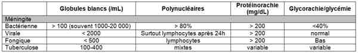
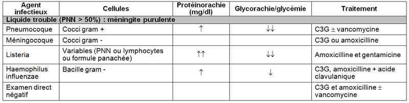
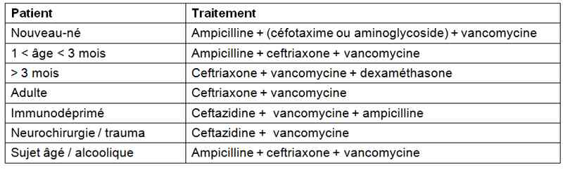

Bienvenue Sur Medical Education
Syndrome méningé fébrile
Spécialité : infectieux / neurologie / pédiatrie /
Points importants
- Définition : irritation des méninges par un agent a priori infectieux
- Diagnostic à évoquer devant toute céphalée fébrile ou syndrome méningé fébrile
- Importance de la précocité d'introduction des antibiotiques sur le pronostic
- Mortalité, importante surtout dans les méningites bactériennes
- Méningites bactériennes : 1 000 cas/an en France
-
Principaux germes des méningites purulentes :
- pneumocoque (incidence croissante ~ 50%)
- méningocoque (> 30%)
- haemophilus influenzae (rare depuis la vaccination)
- La méningite à méningocoque est à déclaration obligatoire
Présentation clinique / CIMU
SIGNES FONCTIONNELS
Généraux
- Fièvre
Spécifiques
-
Céphalées :
- intenses, inhabituelles, diffuses, avec paroxysmes
- noter heure de début, modalités d'apparition (brutal, progressif), facteurs déclenchants
- Rachialgies
- Nausées, vomissements en jets aux changements de position, constipation
- Photophobie, phonophobie
-
Chez l'enfant :
- fièvre ou hypothermie
- léthargie
- succion faible
- vomissements
- détresse respiratoire
- irritabilité
CONTEXTE
Terrain
- Facteurs de risque de brèche ostéo-méningée : ATCD de chirurgie de la base du crâne, de traumatisme crânien, de méningite, de pose de dérivation (ventriculo-atriale, ventriculo-péritonéale) de LCR pour hydrocéphalie
- Facteurs de risque d'une méningite à germe de sensibilité diminuée aux antibiotiques : prise d'antibiotiques dans les 6 derniers mois
- Immunodépression (asplénie, VIH, alcoolisme, néoplasie)
- Grossesse
- Etat du calendrier vaccinal
Circonstances de survenue
- Epidémie, contact infectieux récent pulmonaire ou ORL (sinusite, otite, rhino-pharyngé)
- Collectivité (H. influenzae)
- Retour de voyage (notamment ceinture de la méningite en Afrique, de décembre à Juin)
- Exposition en eau douce (professionnelle ou de loisirs)
EXAMEN CLINIQUE
- Recherche d'une confusion (surtout chez le sujet âgé)
-
En faveur du syndrome méningé :
- raideur de nuque (antéflexion mais aussi possible en rotation)
- position en chien de fusil
- signe de Kernig (genoux fléchis difficiles à étendre)
- signe de Brudzinski (flexion de la nuque induit une flexion de la hanche)
- ROT vifs
- hyperesthésie cutanée
- NB : le syndrome méningé est souvent incomplet, c'est pourquoi le diagnostic de méningite est à évoquer devant toute céphalée fébrile
-
Recherche de signes de gravité :
- purpura nécrotique et/ou hémorragique (méningocoque)
- signes neurologiques de focalisation
-
convulsions, coma profond (
 Glasgow < 8)
Glasgow < 8) - signes de choc septique
-
En faveur d'une étiologie :
- infection ORL (otite, sinusite)
- palpation des aires ganglionnaires, de la rate
- auscultation pulmonaire recherchant une pneumopathie associée
- zona
- rhombencéphalite
-
chez l'enfant :
- recherche de signes de déshydratation
- bombement de la fontanelle en dehors des cris, sans variation respiratoire
- troubles de la conscience
- chez le nourrisson la nuque peut être molle
EXAMENS PARACLINIQUES SIMPLES
- BU : élimine une infection urinaire haute (diagnostic différentiel de la fièvre)
- Fond d'oeil : oedème papillaire bilatéral
CIMU
-
Tri 1 :
- lésions purpuriques (sans signe de choc)
-
troubles de la vigilance avec Glasgow < 8
-
Tri 2 :
- état de choc septique
- purpura extensif
Signes paracliniques
BIOLOGIQUE
-
Recherche de syndrome inflammatoire :
- NFS (hyperleucocytose ; polynucléose ou hyperlymphocytose), élévation du taux de plaquettes
- CRP (fortement suspect d'origine bactérienne)
- BU - ECBU
- Crase sanguine ± CIVD (TP, PDF, complexes solubles)
- Glycémie : interprétation de la glycorachie
- Ionogramme sanguin (acidose métabolique) et urinaire
- Lactates
-
Ponction lombaire (PL) :
- examen-clé pour le diagnostic, réalisé dès que possible (après crase sanguine si suspicion CIVD ou sepsis sévère)
- avec examens cytologique, biochimique (glycorachie, protéinorachie), bactériologique (direct, puis culture et antibiogramme)
- 1 ou 2 tubes de LCR sont à conserver pour des recherches complémentaires éventuelles selon les premiers résultats
-
rares contre-indications :
- HTIC
- signes neurologiques de focalisation
- troubles de la coagulation ou ATCD d'anomalie de la crase sanguine
- infection ou tatouage au point de ponction
- purpura fulminans (faisant craindre une CIVD)
- choc septique
- rechercher le méningocoque par d'autres moyens diagnostiques : PCR (sang, biopsie d'élément purpurique), ou recherche d'antigènes solubles (urine, sang, biopsie cutanée)
-
résultats :
- hautement suspect de méningite si > 5 GB/mL
-
différents types de méningites
-  _679 Tableau Différents types de méningites
- Recherche d'antigènes solubles (méningocoque, pneumocoque, Haemophilus, cryptocoque, borellioses, tuberculose ou histoplasmose)
- Hémoculture : 2 à une heure d'intervalle
- En cas de signes de gravité/purpura fulminans : lactates, recherche CIVD (TP, Produits de Dégradation de la Fibrine, Complexes Solubles)
IMAGERIE
- Radiographie de thorax si la clinique est évocatrice de pneumopathie (clichés de face et de profil), tuberculose
-
Scanner cérébral :
- réalisé après la PL
-
ne sera réalisée avant la PL qu'en cas de :
- signes neurologiques de focalisation (suspicion d'une complication/une méningo-encéphalite) ; dans ce cas, l'imagerie est réalisée après la réalisation d'hémocultures et l'administration des premières doses d'antibiotiques et d'antiviral
- immunosuppression/VIH
- notion de lésion du SNC (abcès, saignement, masse)
- crise convulsive récente (< 7 jours)
- troubles de conscience, coma
- sujet âgé
- oedème papillaire
- L'existence de troubles de la vigilance isolés (sans signe focal) n'est pas une indication à la réalisation de l'imagerie avant la PL
- Si l'IRM est disponible, elle est à privilégier par rapport au scanner
NB : Une exception à la règle : le patient séropositif : faire d'abord une imagerie cérébrale à la recherche d'une toxoplasmose cérébrale
Diagnostic étiologique
FONCTION DE L'AGENT INFECTIEUX
Bactériennes
-
Pneumocoque :
- facteurs de risque de brèche ostéo-méningée (trauma crânien), ATCD de méningite
- infection associée ORL (sinusite, otite) ou pulmonaire
- terrain d'immunodépression
- début brutal
- signes de gravité (signes neurologiques de focalisation et convulsions)
- scanner cérébral : empyème, oedème cérébral
-
Méningocoque (méningite cérébro-spinale) :
- notion d'épidémie de rhinopharyngite (chez les enfants surtout)
- voyage récent en Afrique (ceinture de la méningite) de Décembre à Juin
- début brutal
- purpura
- arthralgies
- herpès péribuccal
-
Haemophilus influenzae :
- infection récente des voies aériennes supérieures
- âge < 5 ans
- absence de vaccination
-
Listeria :
- grossesse
- immunodépression
- nouveau-né, personne âgée, éthylique
- début progressif
- rhombencéphalite (atteinte des paires crâniennes, PF périphérique, diplopie...)
-
Leptospirose :
- baignade en eau douce (exposition de loisirs ou professionnelle)
- absence de vaccination
-
Tuberculose :
- précarité
- immunodépression
- absence de vaccination
-
BGN :
- terrain débilité
-
Staphylocoque :
- après infiltration
- septicémie à staphylocoque
- post-opératoire de neuro-chirurgie
- toxicomanie intraveineuse
- ATCD de dérivation du LCR
-
Syphilis :
- facteurs de risque d'IST
- éruption cutanée, adénopathies
- chancre récent
- syndrome pseudo-grippal
-
Méningites subaiguës :
- maladie de Lyme (piqûre de tique)
- brucellose (fièvre sudoro-algique, exposition professionnelle)
Virales
-
Méningite virale commune :
- épisode rhinopharyngé récent, épidémie saisonnière
- transmission oro-fécale
- début brutal avec syndrome méningé franc
- recherche parotidite (méningite ourlienne), exanthème (méningite morbilleuse ou à coxsackie), enanthème (échovirus)
- pas de coma, pas d'encéphalite
- diarrhée
- rash cutané possible
-
Méningite à VZV (varicelle-zona virus) :
- éruption métamérique en bouquets de vésicules
-
Méningite à VIH dans le cadre de la primo-infection :
- facteurs de risque de MST
- syndrome pseudo-grippal
- éruption cutanée
- ulcérations buccales ou génitales
- diarrhée
- adénopathies
- paralysie faciale
-
Méningite à HSV2 :
- notion de récidive (méningite à HSV2)
- antécédent ou éruption actuelle herpétique génitale
-
Autres méningites virales, sur terrain d'immunodépression
- adénovirus, HHV6
Fongiques
-
Cryptococcose neuro-méningée :
- immunodépression (SIDA surtout, CD4 < 100/mm3)
- échec du traitement antibiotique
Parasitaires (paludisme, cysticercose)
- Méningo-encéphalite
- Notion de voyage à l'étranger
- Hyperéosinophilie sanguine et dans LCR
FONCTION DU PATIENT
-
Nouveau-né :
- streptocoque du groupe B
- bacille gram -
- listeria
-
Enfant/adulte :
- streptococcus pneumoniae
- nesseria meningitides
- haemophilus influenzae
-
Sujet âgé, alcoolique :
- bacille gram -
- streptococcus pneumoniae
- listeria
-
Patients de neurochirurgie :
- staphylocoque
- gram -
-
Patient transplanté ou dialysé :
- listeria
-
Patient VIH :
- tuberculose
- syphilis
AUTRES ETIOLOGIES
- Tumorales
- Hémopathies
- Métastase (foyer à distance ou à partir de lésions secondaires épidurales)
-
Maladies systémiques :
- lupus Erythémateux disséminé
- sarcoïdose
- maladie de Behçet
- granulomatose de Wegener...
CHEZ L'ENFANT
- Le pneumocoque est la bactérie la plus fréquente
Diagnostic différentiel
-
Syndrome méningé sans fièvre :
- hémorragie méningée jusqu'à preuve du contraire
- le scanner précède alors la PL, qui sera réalisée si le scanner est normal, avec recherche de pigments biliaires
-
Syndrome méningé, fièvre et signes encéphalitiques : méningo-encéphalite jusqu'à preuve du contraire :
- virus : HSV1 (traitement par Zovirax à instituer rapidement), EBV et CMV, rougeole, rubéole
- champignons et Parasites : Plasmodium falciparum, Toxoplasma gondi, Cryptococcus neoformans
- bactéries : Pyogènes (streptocoques, anaérobies, staphylocoque, Haemophilus), Listeria monocytogenes, BK, intracellulaires (Mycoplasme, Chlamydiae, Legionella), rickettsies...
- Abcès cérébral, péridural, spinal
- Crise convulsive fébrile
- AVC
- Thrombophlébite cérébrale
- Arthrose cervicale, spondylodiscite, syndrome extrapyramidal
Traitement
TRAITEMENT PREHOSPITALIER/INTRAHOSPITALIER
Stabilisation initiale
-
Cas particulier du purpura fulminans (syndrome infectieux et au moins un élément purpurique nécrotique ou ecchymotique de diamètre > 2 mm) :
-
en préhospitalier : 1re dose d'antibiotique IV (ceftriaxone = Rocéphine® 2g IVD) puis transport vers un hôpital (au mieux doté d'un service de réanimation) par SMUR ou un autre moyen (si délai d'intervention du SMUR > 20 min), en ayant prévenu l'établissement du diagnostic évoqué :
- entourer les lésions purpuriques au stylo pour évaluer l'évolution
- décontamination du véhicule après transport
-
à l'hôpital :
- prévenir le réanimateur
-
en préhospitalier : 1re dose d'antibiotique IV (ceftriaxone = Rocéphine® 2g IVD) puis transport vers un hôpital (au mieux doté d'un service de réanimation) par SMUR ou un autre moyen (si délai d'intervention du SMUR > 20 min), en ayant prévenu l'établissement du diagnostic évoqué :
- Scope
- Voie veineuse avec NaCl 0,9%, remplir pour traiter la déshydratation, l'HoTA (si choc septique, obtenir une PAM de 65 mmHg : ± catécholamines, hémosuccinate d'hydrocortisone)
- SpO2 (oxygénothérapie qsp > 95%)
- Réaliser la première dose d'antibiotique si elle n'a pas été administrée ; en même temps que les hémocultures, le prélèvement d'urine
- La PL peut être réalisée secondairement (chez un patient stable hémodynamiquement)
Traitement spécifique : urgence thérapeutique
Fonction, du terrain
 _680 Tableau Traitement fonction de l'examen direct
En l'absence de signe neurologique focal, après réalisation de la PL :
-
Liquide trouble (PNN > 50%) : méningite purulente :
- si signes de gravité, ne pas attendre les résultats de l'examen direct : débuter une antibiothérapie associant C3G et amoxicilline, +/- vancomycine (si FDR de pneumocoque de sensibilité diminuée à la pénicilline : PDSP)
- si absence de signes de gravité, attendre le résultat de l'examen direct :
 _681 Tableau Traitement empirique
-
Liquide clair (Lymphocytes > 50%) : selon glycorachie :
-
normale :
- méningites virales communes (hyperprotéinorachie modérée, PCR Entérovirus +) : pas de traitement spécifique
- éliminer une primo-infection VIH (faire antigénémie P24 si PCR Entérovirus négative, non disponible, ou si FDR d'IST) et discuter le cas échéant une quadrithérapie antirétrovirale
- évoquer leptospirose (méningite lymphocytaire ou parfois panachée, protéinorachie modérée, glycorachie normale)
- zona, oreillons (hypoglycorachie modérée possible) si contexte particulier
-
basse :
- méningite bactérienne décapitée : notion de prise d'antibiotique : C3G, amoxicilline ± vancomycine
- tuberculose : terrain, cellularité modérée, hyperprotéinorachie, hypoglycorachie, hypochlorurachie inconstante, PCR M. tuberculosis + : quadrithérapie antituberculeuse + corticothérapie
- listeria : terrain (grossesse, immunodépression), BGP + : amoxicilline + gentamycine
- cryptococcose : terrain, Antigènes cryptococciques + examen à l'encre de chine +, dépistage rapide VIH : traitement antifongique (amphotéricine B)
-
normale :
En cas de signe neurologique focal :
- Démarrer, en même temps que les hémocultures, une antibiothérapie associant C3G, amoxicilline et Zovirax® ; avant de réaliser une imagerie cérébrale et des prélèvements complémentaires (urines, sang, LCR en l'absence de contre-indication avec PCR HSV notamment)
Si allergie :
- Pneumocoque : vancomycine, RFM, linézolide, nouvelles fluoroquinolones
- Méningocoque : phénicolés et nouvelles fluoroquinolones
- Listéria : Bactrim®
Corticothérapie :
- Diminue l'inflammation donc le risque potentiel de mortalité/séquelles, mais aussi la pénétration des antibiotiques
-
Indications actuelles :
-
chez l'adulte, en cas de signe de gravité (trouble de conscience, coma) en l'absence de FDR de PDSP ; méningite tuberculeuse :
- 1re injection à réaliser précocement (avant ou en même temps que la 1re injection d'antibiotiques)
-
chez l'enfant = méningites purulentes :
- dexaméthasone : 0,6 mg/kg/j sur 2-4 jours
-
chez l'adulte, en cas de signe de gravité (trouble de conscience, coma) en l'absence de FDR de PDSP ; méningite tuberculeuse :
Mesures associées
- Déclaration obligatoire : méningocoque, Listeria, M. tuberculosis
- Isolement respiratoire : surtout pour le méningocoque
- Recherche d'un foyer ORL/pulmonaire associé, d'une brèche ostéoméningée : en cas de méningite à pneumocoque
-
Chimioprophylaxie et vaccination dans l'entourage en cas de méningocoque :
- si contact de distance < 1m : partenaire(s), famille vivant sous le même toit, voisins de classe
- à discuter : sports avec proximité physique
- non recommandée : prophylaxie systématique de tout le personnel soignant (seulement si bouche-à-bouche, IOT)
- vaccination : selon le sérotype retrouvé et pour l'entourage proche du patient dans les semaines suivant le diagnostic
-
Chimioprophylaxie en cas de méningite à Haemophilus :
- RFM 20-40 mg/kg/j (max. 600 mg/j) pendant 4 jours
Suivi du traitement
- Adaptation de l'antibiothérapie : selon le germe, l'antibiogramme, l'évolution clinique ; restriction du spectre chaque fois que possible
- Surveillance des points de ponction et perfusions (sérum salé isotonique en 1e intention ; possibilité de laisser un obturateur sur cathéter entre les perfusions)
- PL de contrôle à 48h : seulement en cas de méningite à PDSP et/ou évolution défavorable
- Pour l'entourage, en cas de chimioprophylaxie, penser à informer du risque d'interactions médicamenteuses sous rifampicine (notamment inefficacité de la contraception orale)
MEDICAMENTS
Antibiotiques
- C3G : céfotaxime 200 à 300 mg/kg/j en 4 perfusions (Claforan® 3gx4/j) ou ceftriaxone = Rocéphine® 2g x 2/j (enfant = 50-100 mg/kg)
- Amoxicilline : 150 à 200 mg/kg/j en 4 à 6 perfusions
- Vancomycine : bolus de 15mg/kg/j puis 60 mg/kg/jour en 4 perfusions d'au moins une heure
- Gentamicine : 3 mg/kg/j
-
En cas d'allergie, selon le germe :
- pneumocoque : vancomycine, rifampicine, linézolide, nouvelles fluoroquinolones
- méningocoque : phénicolés et nouvelles fluoroquinolones
- listeria : Bactrim (4-5 mg/kg IV x2/j)
-
Rifampicine en chimioprophylaxie :
- méningocoque : 600 mg p.o. x2/j pendant 2 jours chez l'adulte
- 10 mg/kg x2/j pendant 2 jours chez l'enfant (ou 5mg/kg x2/j pendant 2 jours si âge < 1 an)
- haemophilus : 600 mg/j maximum, pendant 4 jours
- attention aux interactions médicamenteuses (notamment avec la pilule oestroprogestative chez la femme en âge de procréer)
- alternative si allergie ou femme enceinte : ceftriaxone en dose unique : 250 mg chez l'adulte ; 125 mg chez l'enfant, le nourrisson, le nouveau-né
- Chimioprophylaxie chez l'enfant
Antiviral
- Zovirax® : 10 à 15 mg/kg/8h
Antituberculeux
-
Voie veineuse si coma/convulsions :
- Rimifon® 3 mg/kg/j
- rifampicine 10 mg/kg/j
- Myambutol® 20 mg/kg/j
- Pirilène® 30 mg/kg/j
-
Sinon per os :
- Rifater® 3 à 6 cp/j
- Myambutol® : 20 mg/kg/j
Corticoïdes
- Dexaméthasone 0,15 mg/kg x 4/j pendant 2 jours. Donner avant ou simultanément à la première dose d'antibiotique
- Hydrocortisone : 100-300 mg IV
Vaccins
-
Anti-méningococcique, selon sérotype mis en évidence :
- polyosidique A + C ; à partir de 6 mois
- conjugué C : à partir de 2 mois
- tétravalent A, C, Y, W135 : à partir de 2 ans
Surveillance
CLINIQUE
- Efficacité du traitement : régression de la fièvre, du syndrome méningé, des signes de gravité
-
Syndrome post-PL : céphalées positionnelles (au passage à l'orthostatisme), disparaissant au décubitus :
- l'alitement strict n'est plus recommandé ; antalgiques adaptés à l'EVA et hydratation large ; envisager un blood-patch en cas de persistance des symptômes
- Tolérance des traitements institués : selon les molécules administrées
PARACLINIQUE
- Régression du syndrome inflammatoire
- PL de contrôle : seulement si évolution défavorable à la 48e heure ou si PDSP
- Imagerie cérébrale : si suspicion de complication (abcès, empyème, thrombose veineuse cérébrale...)
Devenir / orientation
CRITERES D'ADMISSION
-
Hospitalisation systématique, au moins 24 à 48h (jusqu'aux résultats de la culture) dans les méningites virales communes :
- exception : patient sans comorbidité, méningite lymphocytaire à PCR Entérovirus +, bien entouré, comprenant les enjeux de la surveillance et les critères devant faire reconsulter en urgence
-
Hospitalisation en réanimation si purpura fulminans, choc septique, troubles de la conscience avec Glasgow < 8
- Hospitalisation en Médecine dans les autres cas
CRITERES DE SORTIE
- Méningites virales : après une courte hospitalisation, si évolution clinique favorable et en l'absence de syndrome post-PL invalidant
ORDONNANCE DE SORTIE
- Chimioprophylaxie et vaccination après enquête dans l'entourage, dès le diagnostic posé, le cas échéant
- Concernant le patient : antalgiques, arrêt de travail
RECOMMANDATIONS DE SORTIE
- Consulter en urgence si fièvre, troubles neurologiques, récurrence des signes initiaux (syndrome méningé) ; ce qui sous-entend la compréhension et la compliance du patient
- Consulter si syndrome post-PL
- Consulter le médecin traitant une semaine après la sortie pour s'assurer de la guérison
Mécanisme / description
METABOLISME
-
Le LCR (90 à 150 mL chez l'adulte) :
- est complètement renouvelé 3 fois / 24h
- il est sécrété (80% par les plexus choroïdes ventricules latéraux) et résorbé (villosités arachnoïdiennes) en permanence
- est une interface entre le sang (barrière hémato-méningée) et le SNC (barrière cérébro-méningée)
- l'hyperprotéinorachie est due soit à un transsudat soit à une synthèse intratéchale d'immunoglobulines
- l'hypoglycorrachie est due à la consommation de glucose par des microorganismes ou par des cellules tumorales
PHARMACODYNAMIE
- Utilisation de molécules à bonne pénétration méningée, actifs sur les germes suspectés
- La concentration méningée dépend : du degré d'inflammation locale (la concentration augmente avec l'inflammation), de la résorption active de la molécule par les plexus choroïdes et de sa lipophilie, de la posologie utilisée
-
Les corticoïdes diminuent l'inflammation locale et potentiellement la concentration des antibiotiques utilisés : prudence, surtout en cas de PDSP ! :
- les antibiotiques dont la concentration méningée peut être ainsi diminuée sont surtout les beta-lactamines, les aminosides, les quinolones
Bibliographie
- Conférence de consensus : Méningites Purulentes Communautaires (SPILF, 1996)
- CAT devant une suspicion de méningite de l'adulte (Congrès SRLF 2000)
- Urgences-Online : Méningite, Purpura Fulminans
-
www.infectiologie.com :
- Prise en charge des méningites bactériennes (G. Chaumentin, Maladies Infectieuses, Roanne, 2004)
- Les méningies bactériennes (JP Stahl, Infectiologie, CHU Grenoble)
- Le Pilly (Collège des universitaires de Maladies Infectieuses et Tropicales)
- Clinical Features and Prognostic Factors in Adults with Bacterial Meningitis (Diederik van de Beek, M.D., Ph.D., Jan de Gans, M.D., Ph.D., Lodewijk Spanjaard, M.D., Ph.D., Martijn Weisfelt, M.D.,Johannes B. Reitsma, M.D., Ph.D., and Marinus Vermeulen, M.D., Ph.D)
- Circulaire DGS (DGS/5C/2006/458) du 23/10/2006
- Méningites bactériennes ; stratégies de traitement et de prévention ; expertise collective INSERM, Les Editions Inserm, 1996
Auteur(s) : Anne-Lise LECAPITAINE, Patrick PLAISANCE